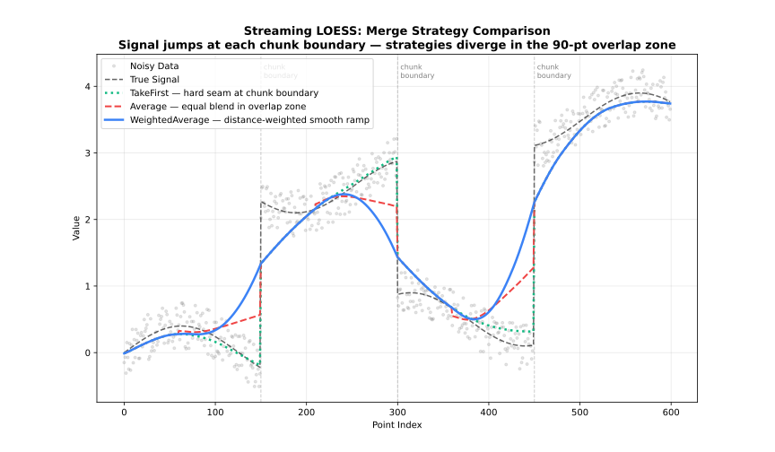

StreamingLoess API
For datasets that don’t fit in memory or arrive in chunks. Processes data incrementally, merging overlapping regions between chunks.
See also: API
StreamingOptions.builder() StreamingOptions.Builder
StreamingOptions options = StreamingOptions.builder()
.chunkSize(2000)
.overlap(200)
.build();StreamingOptions.Builder exposes all the same settings as Options.Builder (except "sorted" output, cv.fractions/cv.method/cv.k/seed, which are batch-only), plus:
| Setting | Type | Default | Description |
|---|---|---|---|
|
|
|
Smoothing fraction (bandwidth) |
|
|
|
Number of robustifying iterations |
|
|
|
Kernel weight function |
|
|
|
Robustness method |
|
|
|
Polynomial degree |
|
|
|
Number of predictor dimensions |
|
|
|
Distance metric |
|
|
|
Per-dimension weights (used when |
|
|
|
Surface computation mode |
|
|
|
Cell size for interpolation grid (smaller → more vertices, higher accuracy) |
|
|
|
Number of interpolation vertices |
|
|
|
Zero-weight handling |
|
|
|
Boundary handling policy |
|
|
|
Fall back to lower polynomial degree at boundaries when higher degrees fail |
|
|
|
Residual scaling method |
|
|
|
Auto-convergence tolerance |
|
|
|
Policy for non-finite (NaN/Inf) values in each chunk |
|
|
|
Number of points processed per chunk. Larger chunks reduce per-chunk overhead and give each local fit more surrounding context, at the cost of higher peak memory; smaller chunks bound memory tightly but increase the fraction of points that fall in overlap regions. A good starting point is balancing available memory against how much processing overhead per chunk is acceptable — match it to your file-read buffer or message-batch size to avoid unnecessary copying. |
|
|
|
Number of points retained from the previous chunk as context, so the neighbourhood at chunk boundaries isn’t artificially truncated. Points inside the overlap zone are fitted twice (once by each chunk) and reconciled via |
|
|
|
How overlapping chunk results are combined. |
|
|
empty |
Select |
|
|
disabled |
Grouped confidence and prediction coverage levels. |
| Strategy | Alias | Behavior |
|---|---|---|
|
|
Distance-weighted blend |
|
|
Average overlapping values |
|
|
Keep left chunk values |
|
|
Keep right chunk values |
See also: Merge Strategies

Confidence/prediction intervals and standard errors are computed per chunk and merged across overlap boundaries via mergeStrategy, same as y. Cross-validation and the "sorted" output are Batch-only and not available here; Optional components are selected only through outputs.
StreamingLoess.processChunk(double[] x, double[] y) Result
Fits and returns the result for one chunk. Each chunk is fit together with the trailing overlap points buffered from the previous call, then only the points that are fully resolved are returned — the tail of the chunk (the next overlap points) is held back internally, since it will be refit once the following chunk arrives and its estimate reconciled via mergeStrategy. This is what lets the adapter process a dataset far larger than memory allows, one bounded-size chunk at a time, without ever materializing the whole dataset at once. Call repeatedly as chunks arrive.
The processChunk(double[] x, double[] y, double[] customWeights) overload accepts one finite non-negative case weight per observation and carries weights through buffered overlap points.
StreamingLoess.finish() Result
Flushes the overlap points still buffered from the last processChunk call. Because each call withholds its tail until the next chunk arrives to resolve it, the final chunk’s tail would never be emitted otherwise — always call finish once after the last chunk to retrieve it.
StreamingLoess.close()
Releases native resources. Safe to call multiple times. Implements AutoCloseable.
Options
fraction
fraction is the most important parameter: it controls the size of the local neighbourhood used at each point.
| Range | Effect | Use case |
|---|---|---|
0.1-0.3 |
Fine detail |
Rapidly changing signals |
0.3-0.5 |
Balanced |
General purpose |
0.5-0.7 |
Heavy smoothing |
Noisy data |
0.7-1.0 |
Very smooth |
Trend extraction |
iterations
iterations controls robustness to outliers, at the cost of speed.
| Value | Effect | Performance |
|---|---|---|
0 |
No robustness |
Fastest |
1-3 |
Moderate |
Recommended |
4-6 |
Strong |
Contaminated data |
7+ |
Very strong |
Heavy outliers |
weightFunction
See: Weight Functions
-
"tricube"(default) -
"epanechnikov" -
"gaussian" -
"uniform"(alias:"boxcar") -
"biweight"(alias:"bisquare") -
"triangle"(alias:"triangular") -
"cosine"
dimensions
See: Multivariate LOESS
Number of predictor dimensions. Set to match the number of columns in a multivariate x array. 1 (default) is univariate.
distanceMetric
See: Multivariate LOESS
-
"normalized"(default — scales each dimension by its range; alias:"norm") -
"euclidean"(alias:"euclid") -
"manhattan"(alias:"l1") -
"chebyshev"(alias:"linf") -
"minkowski"(use"minkowski:p"string for custom exponent, e.g."minkowski:3") -
"weighted"plusweightedMetricWeightsfor per-dimension scaling (alias:"weighted_euclidean")
weightedMetricWeights
See: Multivariate LOESS
Per-dimension weights, one per dimension declared in dimensions. Only used when distanceMetric = "weighted"; setting distanceMetric = "weighted" without providing this raises an error.
-
null(default) — has no effect unlessdistanceMetric = "weighted"is set -
A non-empty
double[]of per-dimension weights, required whendistanceMetric = "weighted"
surfaceMode
See: Polynomial Degree
-
"interpolation"(default) — evaluate at anchor vertices, blend via Hermite cubic (cell/interpolationVerticestune the vertex grid). -
"direct"— evaluate at every query point, exact.
cell
Cell size for the interpolation grid, as a fraction of the data range. Smaller values place more vertices (denser grid), improving accuracy at the cost of speed. Only applies when surfaceMode is "interpolation".
-
NaN(default) — uses the library default (0.2) -
Any value in
(0, 1]
interpolationVertices
Caps the maximum number of interpolation vertices, overriding the count implied by cell. Only applies when surfaceMode is "interpolation".
-
-1(default) — uses the library default (no explicit cap) -
Any integer
>= 1
zeroWeightFallback
Behavior when all neighborhood weights are zero:
| Option | Behavior |
|---|---|
|
Use the mean of the neighborhood |
|
Return the original y value |
|
Return |
boundaryPolicy
See: Boundary Handling
-
"extend"(default; alias:"pad") -
"reflect"(alias:"mirror") -
"zero" -
"noboundary"(alias:"none")
boundaryDegreeFallback
Whether to reduce the polynomial degree at boundary vertices when the requested degree can’t be fit there (e.g., not enough neighbours). Only applies when surfaceMode is "interpolation".
-
null(default) — uses the library default (enabled) -
true— falls back to a lower degree at boundaries -
false— raises an error instead of silently falling back
scalingMethod
See: Scaling Methods
-
"mad"(default; alias:"median_absolute_deviation") -
"mar"(alias:"median_absolute_residual") -
"mean"(alias:"mean_absolute_residual")
autoConverge
See: Robustness
Convergence tolerance for early stopping of robustness iterations. NaN (default) disables early stopping.
missing
Policy for handling non-finite (NaN/Inf) values within each chunk:
| Option | Behavior |
|---|---|
|
Throw an error if any value in the chunk is non-finite |
|
Silently remove rows where any x dimension or y is non-finite before merging the chunk with the overlap buffer |
A length mismatch between x and y always throws, even under "drop".
|
chunkSize
Number of points processed per chunk. Larger chunks reduce per-chunk overhead and give each local fit more surrounding context, at the cost of higher peak memory; smaller chunks bound memory tightly but increase the fraction of points that fall in overlap regions. A good starting point is balancing available memory against how much processing overhead per chunk is acceptable — match it to your file-read buffer or message-batch size to avoid unnecessary copying.
overlap
Number of points retained from the previous chunk as context, so the neighbourhood at chunk boundaries isn’t artificially truncated. Points inside the overlap zone are fitted twice (once by each chunk) and reconciled via mergeStrategy. A good starting point is 10–20% of chunkSize: too little overlap causes visible boundary artefacts, while too much wastes computation refitting the same points twice.
-
Negative (default,
-1) — computeschunkSize / 10, clamped to at least 1 and at mostchunkSize - 10 -
Any
int >= 1and< chunkSize
mergeStrategy
See: Merge Strategies
| Strategy | Alias | Behavior |
|---|---|---|
|
|
Distance-weighted blend |
|
|
Average overlapping values |
|
|
Keep left chunk values |
|
|
Keep right chunk values |
outputs: diagnostics
Populate Result.diagnostics() with RMSE, MAE, R², and residual_sd. effectiveDf/aic/aicc require standard errors, which are Batch-only, so they’re always empty here.
outputs: gradient
Each local polynomial fit (degree >= linear) already computes per-dimension coefficients internally; this exposes the per-point gradient (dimensions values per point, flattened) via Result.gradient() at effectively no extra computation cost. Only supported when surfaceMode = "direct" — throws a RuntimeException instead of silently leaving gradient() empty if requested under the default "interpolation" mode. Omitted by default. Gradient values in the overlap region are merged across chunk boundaries the same way y is, via mergeStrategy.
outputs: se
Include standard errors in the result (Result.standardErrors()), computed per chunk and merged across overlap boundaries via mergeStrategy.
outputs: weights
Populate Result.robustnessWeights() with the final per-point robustness weights (from the last robustness iteration).
intervals.confidence
See: Intervals
Confidence level for the confidence interval around the mean response (e.g. 0.95), computed per chunk and merged across overlap boundaries the same way y is, via mergeStrategy. NaN (default) disables confidence intervals.
intervals.prediction
See: Intervals
Confidence level for the prediction interval for new observations (e.g. 0.95); same per-chunk computation and overlap-merging as intervals.confidence. NaN (default) disables prediction intervals.
Result
processChunk and finish return the same Result type as Loess.fit, described in API. Fields tied to Batch-only options (cvScores(), hatMatrix()) are always empty here.
Example
import fastloess.Result;
import fastloess.StreamingLoess;
import fastloess.StreamingOptions;
public class Example {
public static void main(String[] args) {
final int n = 20;
double[] x = new double[n];
double[] y = new double[n];
for (int i = 0; i < n; i++) {
x[i] = i;
y[i] = i + 0.1;
}
StreamingOptions options = StreamingOptions.builder()
.chunkSize(10)
.overlap(2)
.build();
try (StreamingLoess model = new StreamingLoess(options)) {
double[] x1 = java.util.Arrays.copyOfRange(x, 0, 10);
double[] y1 = java.util.Arrays.copyOfRange(y, 0, 10);
double[] x2 = java.util.Arrays.copyOfRange(x, 10, 20);
double[] y2 = java.util.Arrays.copyOfRange(y, 10, 20);
model.processChunk(x1, y1);
model.processChunk(x2, y2);
Result result = model.finish();
System.out.printf("y[0]: %.4f%n", result.y()[0]);
}
}
}y[0]: 18.1000